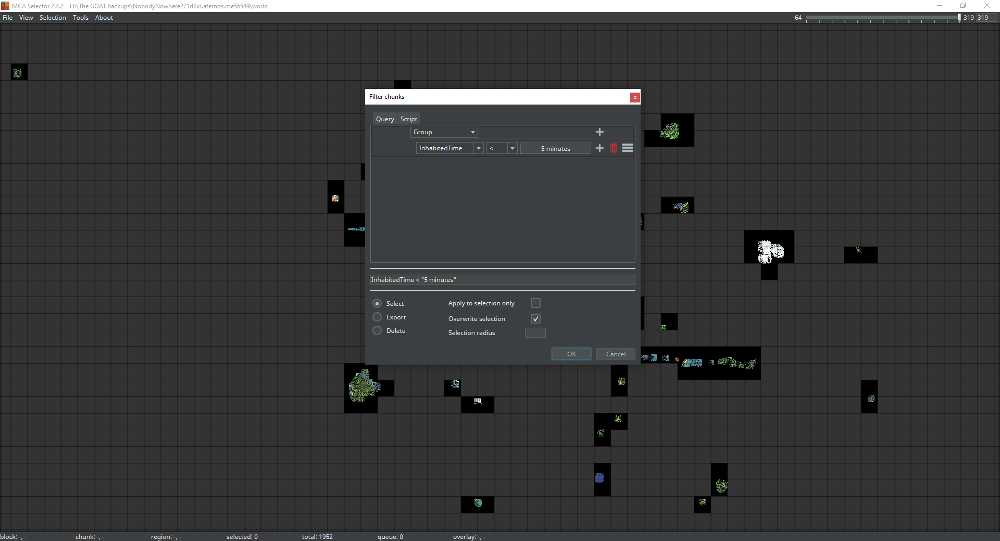

Гайд по MCA Selector
Встановлення програми
Щоб почати, завантаж MCA Selector із GitHub. Для цього перейди на цю сторінку і завантаж файл MCA_Selector_Setup.exe, просто натиснувши на нього. . Не переймайся номером версії — це не версія Minecraft. Далі відкрий файл та встанови програму.
Перший запуск та завантаження світу
Після встановлення програми, відкривай її та трохи зачекай. У тебе має відкритися вікно з темною сіткою. Ось і вся програма!
Неочікувано і приємно: в програмі є українська мова! (File - Settings - Languages)
Щоб почати роботу необхідно завантажити світ, для цього натискаєш File - Open Wolrd, після чого вибираєш потрібний зі списку своїх світів у файловому провіднику.
Далі тобі запропонує вибрати вимір, з яким ти будеш працювати. Звичайний світ (Overworld) буде називатися так само як і твій світ. Незер це папка DIM-1, а Енд це DIM1. Якщо випадково вибрав не той вимір, то можеш легко перемкнутися між ними у вкладці File - Open Dimension.
Керування
Щоб переміщуватися по мапі натисни на коліщатко миші та рухай саму мишу. Щоб виділити чанки / регіони натисни ліву кнопку миші, щоб скасувати виділення натисни праву кнопку миші. Якщо потрібно виділити велику територію можеш просто затиснути кнопку і провести мишкою вбік.
Видалення чанків
Важливо! Перед початком роботи зроби резервну копію свого світу. MCA Selector одразу видаляє файли без можливості відновлення.
Щоб видалити непотрібні чанки, просто виділи їх, а потім зайди в меню Selection та натисни Delete Selected Chunks. Видалені ділянки стануть чорними, а при завантаженні світу наступного разу Minecraft автоматично згенерує нові чанки на їхньому місці.
Зауваж, що перегенерація чанків на тій самій версії нічого не змінить і просто може видалити всі зміни, що ти робив на тій території. Видалення чанків має сенс, якщо ти грав на старій версії (1.19 наприклад) і хочеш, щоб палац випробувань з 1.21 генерувався поруч з твоїм домом. Для цього видали чанки поруч, які не шкода, і зайди в світ вже на новій версії.
Фільтри
Однією з найкорисніших функції є фільтрування чанків. Зокрема фільтрування чанків закількістю часу, проведеному на цих територіях. Для цього натисни Tools - Filter Chunks. У тебе має відкритися таке меню:
Як бачиш, зараз тут є один фільтр «InhabitedTime» він визначає час, який ти провів на певній ділянці світу. Якщо відфільтрувати чанки, як на фото вище, то виділяться всі чанки де ти провів менш ніж п'ять хвилин.
Моє улюблене налаштування це більше 2 годин. Для цього у рядку фільтра заміни знак "<" на ">" і зміни час 5 хвилин на 2 години (2 hours). Таким чином, через деякий час, виділяться всі чанки, де ти перебував більше двох годин. На цьому етапі не варто поспішати, бо якщо зараз натиснеш видалити чанки, то ймовірно видалиш свою базу, оскільки ти був там явно більше двох годин. На щастя, можна інвертувати вибірку, для цього натисни закрий меню з фільтрами (інакше не зможеш нічого натиснути) і вгорі натисни Seleckion - Invert. Після цього будуть виділені всі території, окрім тих, де ти був більше двох годин. Тепер можна вже натиснути Delete Selected Chunks.
Інші функції
Є можливість зробити скріншот світу. Можна зробити скріншот як ділянки, що показується у тебе на екрані в момент знімка, так і виділеного регіону (хоч весь світ). Що зробити скріншот ділянки що показується у тебе на екрані натисни View - Save screenshot. Щоб зробити скріншот певного регіону, для початку виділи його, а потім натисни Selection - Export as image.
На вкладці Tools можна поміняти місцями чи редагувати чанки за необхідності. Наприклад, можна поєднати два світи в один. Для цього треба виділити чанки одного світу й експортувати їх кудись (Selection - Export selected chunks), потім імпортувати (Selection - Import selection from .csv) їх в інший світ.
Вище я писав про фільтри й насправді їх досить багато. Можна сортувати по осях x і y, освітленню, сутностям тощо.